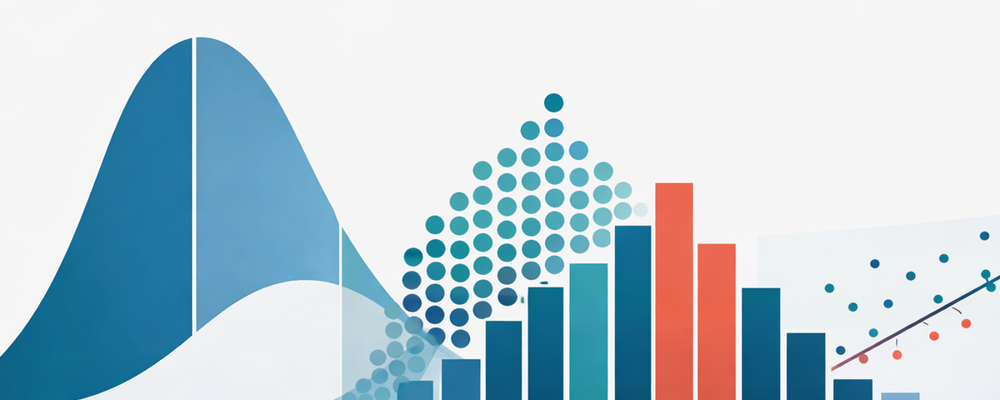

StatLens

Visualize and summarize your data. Start by asking: what kind of variable do I have? Part I, Chapters 1–5
One Quantitative Variable
Histogram, boxplot, dotplot, and summary statistics.
Quantitative by Group
Side-by-side boxplots, dotplots, or histograms to compare groups.
One Categorical Variable
Bar chart and frequency table.
Two Categorical Variables
Contingency table with proportion toggles and grouped bar charts.
Two Quantitative Variables
Scatterplot with least-squares regression line, r, and R².
Data Explorer
Load a dataset, select variables, choose your own visualization.
Browse All Datasets
Search and explore 100+ bundled datasets by type and variable.
StatLens Labs
Dotplot Editor
Click to add and remove points. Watch how mean, median, and spread respond to outliers.
Guess the Correlation
See a scatterplot, guess r. Build your visual intuition for correlation.
Regression by Eye
Drag a line to fit the data. Toggle between squared and absolute errors, then compare to the optimal fit.
Are You Psychic?
Predict coin flips to test your "psychic" powers, then see if your result could be due to chance.
Stump the Chump
Try to fake a random coin-flip sequence, then compare it to a real one. Can you fool the computer?
Build confidence intervals by bootstrapping and test hypotheses by randomization. Part II, Chapters 6–9
| Data Type | Bootstrap CI | Randomization Test |
|---|---|---|
| One Quantitativeone numeric variable | CI for a Mean | Test for a Mean |
| One Categoricalone yes/no variable | CI for a Proportion | Test for a Proportion |
| Compare Two Groupsnumeric outcome by group | CI: Diff in Means CI: Diff in Props | Test: Diff in Means Test: Diff in Props |
| Paired Samplesbefore/after on same subjects | CI: Paired Diff | Test: Paired Diff |
StatLens Labs
Sampling Distributions
Draw samples, watch the sampling distribution build. See the Central Limit Theorem in action.
What Is a Randomization Test?
Shuffle cards, build a null distribution step by step, and see what a p-value really means.
Are You Psychic?
Predict coin flips, then use simulation to test whether your result could be due to chance. A gentle intro to hypothesis testing.
Decision Errors
Run many studies with or without a real effect. Watch detections, missed effects (Type II), and false alarms (Type I).
Theory-based tests and confidence intervals using t and z distributions. Part III, Chapters 10–13
| Data Type | Traditional Inference |
|---|---|
| One Quantitativeone numeric variable | One-Sample tt-test and CI for a single mean |
| One Categoricalone yes/no variable | One-Proportion zz-test and CI for a single proportion |
| Compare Two Groupsnumeric outcome by group | Two-Sample tWelch’s t-test for μ₁ − μ₂ Two-Proportion zz-test for p₁ − p₂ |
| Paired Samplesbefore/after on same subjects | Paired tt-test and CI for mean difference |
Distribution Calculators
Normal
Probabilities and critical values for the normal distribution.
t
Student’s t-distribution with adjustable df.
StatLens Labs
Apply inference methods to chi-square, ANOVA, correlation, and regression — richer data structures, same simulation and theory-based approaches. Part IV, Chapters 14–20
| Topic | Explore | Simulation | Traditional |
|---|---|---|---|
| Chi-Squaretwo categorical variables | Two-Way Table | χ² Randomization | Chi-Square Test |
| ANOVA3+ groups, numeric outcome | Compare Groups | ANOVA Randomization | ANOVA F-Test |
| Correlation & Regressiontwo quantitative variables | Scatterplot | CI for Slope Test for Correlation | Regression t |
Distribution Calculators
StatLens Labs
Probability distributions, and the ideas behind hypothesis testing errors and power. Most of these chapters involve pencil-and-paper work — the tools below support the computational sections. Parts V–VI, Chapters 21–28
Distribution Calculators
Binomial
Discrete PMF, cumulative probabilities, normal approximation overlay.
Normal
Probabilities and critical values for the normal distribution.
All Distribution Calculators
Normal, t, chi-square, F, binomial, and power visualizer — all in one place.
StatLens Labs
Confidence Interval Coverage
Draw 100 confidence intervals and see what “95% confidence” really means.
Power & Error Visualizer
Visualize Type I error, Type II error, and power. Adjust α, sample size, and effect size to see how they interact.
Power Lab (simulation)
Run thousands of studies; watch the empirical power converge to the theory and the p-values dance around α.
Decision Errors
A plainer, jargon-light view of hits, missed effects, and false alarms across many studies.
Start by asking: what type of variable do I have? Each row shows all the tools for that situation.
| Data Type | Explore | Bootstrap CI | Randomization Test | Traditional |
|---|---|---|---|---|
| One Quantitativeone numeric variable (heights, scores, prices…) | Descriptive Stats | CI for a Mean | Test for a Mean | One-Sample t |
| One Categoricalone variable with categories (yes/no, color, party…) | Frequency Table | CI for a Proportion | Test for a Proportion | One-Prop z |
| Compare Two Groupsnumeric outcome split by group (treatment vs. control…) | Compare Groups | CI: Diff in Means CI: Diff in Props | Test: Diff in Means Test: Diff in Props | Two-Sample t Two-Prop z |
| Paired Samplestwo measurements on the same subjects (before/after…) | Descriptive Statson the differences | CI: Paired Diff | Test: Paired Diff | Paired t |
| Two Categoricaltwo category variables (group × outcome…) | Two-Way Table | — | χ² Randomization | χ² Test |
| Multiple Groups3+ groups, numeric outcome (ANOVA) | Compare Groups | — | ANOVA Randomization | ANOVA F-Test |
| Two Quantitativetwo numeric variables (x & y, scatterplot data…) | Scatterplot | CI for Slope | Test for Correlation | Regression t |
StatLens Labs
Dotplot Editor
Click to add and remove points. Watch how mean, median, and spread respond.
Guess the Correlation
See a scatterplot, guess r.
Regression by Eye
Drag a line to fit the data, then compare to the optimal fit.
Are You Psychic?
Predict coin flips, then test if your result could be chance.
Stump the Chump
Fake a random sequence, then compare to a real one.
Conceptual Demonstrations
Sampling Distributions
Draw samples, see the CLT in action.
CI Coverage
What “95% confidence” really means.
Decision Errors
Run many studies; see hits, misses, and false alarms.
Power Lab
Empirical power converging to theory; the p-value dance.
Randomization Test
Shuffle cards, build a null distribution.
Distribution Calculators
Normal
z probabilities and critical values.
t
t-distribution with adjustable df.
Chi-Square
χ² distribution calculator.
F
F distribution calculator.
Binomial
PMF, cumulative P, normal overlay.
Power & Error
Visualize α, β, and power trade-offs.
Practice & Games
Start by asking: what parameter am I estimating or testing?
| Parameter | Explore | Bootstrap CI | Randomization Test | Traditional |
|---|---|---|---|---|
| One Mean μ | Descriptive Stats | CI for a Mean | Test for a Mean | One-Sample t |
| One Proportion p | Frequency Table | CI for a Proportion | Test for a Proportion | One-Prop z |
| Diff in Means μ₁ − μ₂ | Compare Groups | CI: Diff in Means | Test: Diff in Means | Two-Sample t |
| Paired Mean Diff μd | Descriptive Statson differences | CI: Paired Diff | Test: Paired Diff | Paired t |
| Diff in Proportions p₁ − p₂ | Two-Way Table | CI: Diff in Props | Test: Diff in Props | Two-Prop z |
| Independence χ² | Two-Way Table | — | χ² Randomization | χ² Test |
| ANOVA F | Compare Groups | — | ANOVA Randomization | ANOVA F-Test |
| Slope / Correlation β₁, ρ | Scatterplot | CI for Slope | Test for Correlation | Regression t |
StatLens Labs
Dotplot Editor
Click to add and remove points. Watch how mean, median, and spread respond.
Guess the Correlation
See a scatterplot, guess r.
Regression by Eye
Drag a line to fit the data, then compare to the optimal fit.
Are You Psychic?
Predict coin flips, then test if your result could be chance.
Stump the Chump
Fake a random sequence, then compare to a real one.
Conceptual Demonstrations
Sampling Distributions
Draw samples, see the CLT in action.
CI Coverage
What “95% confidence” really means.
Decision Errors
Run many studies; see hits, misses, and false alarms.
Power Lab
Empirical power converging to theory; the p-value dance.
Randomization Test
Shuffle cards, build a null distribution.
Distribution Calculators
Normal
z probabilities and critical values.
t
t-distribution with adjustable df.
Chi-Square
χ² distribution calculator.
F
F distribution calculator.
Binomial
PMF, cumulative P, normal overlay.
Power & Error
Visualize α, β, and power trade-offs.
Practice & Games